代码仙途
修仙 × 编程 × 创业
第一章：编译飞升
↓ 向下滑动开始阅读 ↓
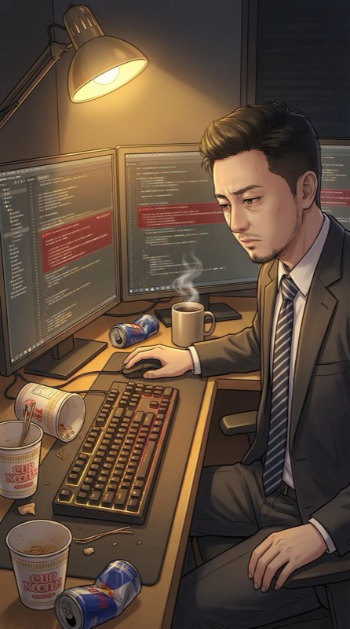
凌晨三点。三台显示器闪着刺眼的红色错误日志，泡面桶和功能饮料罐堆满桌面。咖啡还冒着最后一丝热气。这个bug我已经追了七个小时。
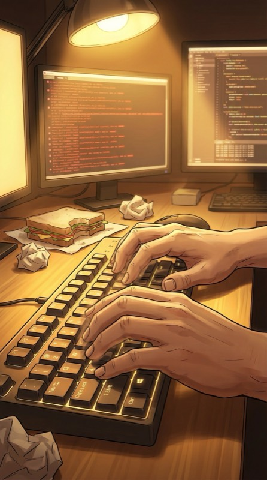
手指在机械键盘上飞速敲击，指尖几乎看不清轮廓。屏幕上错误日志像瀑布一样滚动。今晚必须解决，明天就是上线日。
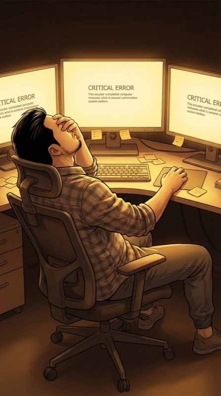
我靠在椅背上，一只手捂住了脸。三台显示器同时报着相同的错误。整个办公室只剩我一个人，周围黑漆漆的，只有我这一小片光。累到骨头都在叫。
揉了揉布满血丝的眼睛，盯着屏幕上反复出现的同一个错误。嘴角绷得紧紧的——十五年编程生涯，从没见过这么诡异的bug。但我朱江不信邪。
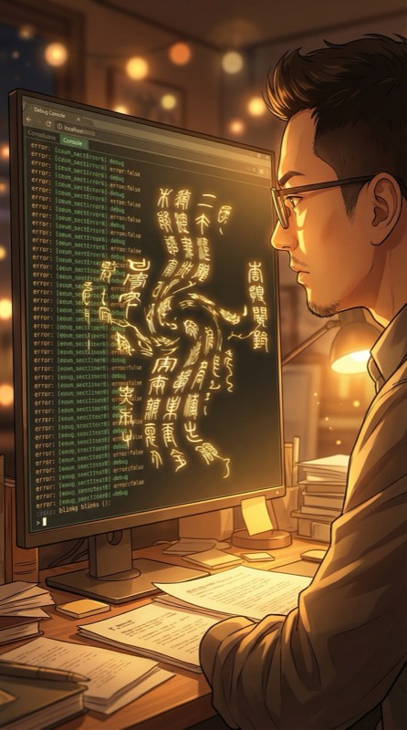
错误信息突然开始变了。屏幕上的字符自己重新排列，变成一种……像是古代篆书和代码混合的东西。金色的光从屏幕里透出来。我以为自己眼花了。
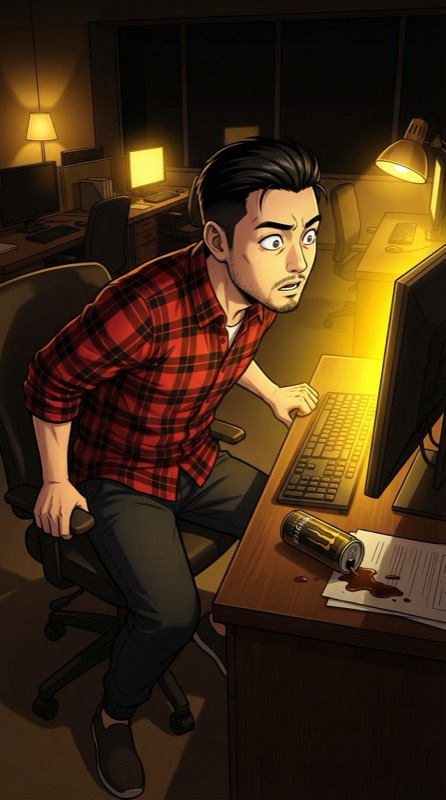
我猛地从椅子上弹起来，双手撑在桌沿上。屏幕发出不正常的金色光芒，照亮了我整张脸。功能饮料罐被撞倒了，液体洒了一桌。这不是眼花。
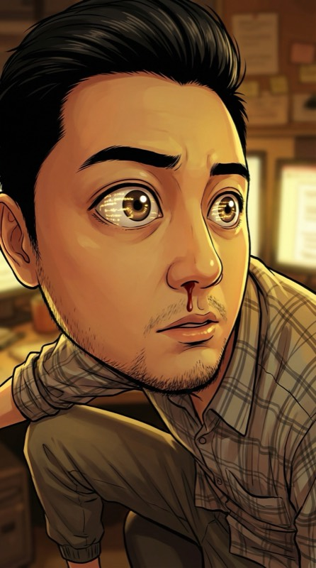
眼睛瞪得溜圆，金色的代码图案在瞳孔里清晰地映出来。一滴鼻血从左边鼻孔滑下来——通宵的后遗症。但那些金色的符号……是真实的。
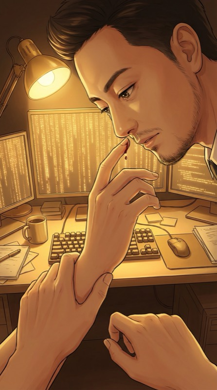
伸手摸了一下鼻血。指尖上一小点红。但我的注意力全在背后——三台显示器现在都在显示那种流动的金色代码，像活的一样。桌上的泡面桶、键盘、鼠标，一切都还是原来的样子。只有屏幕变了。
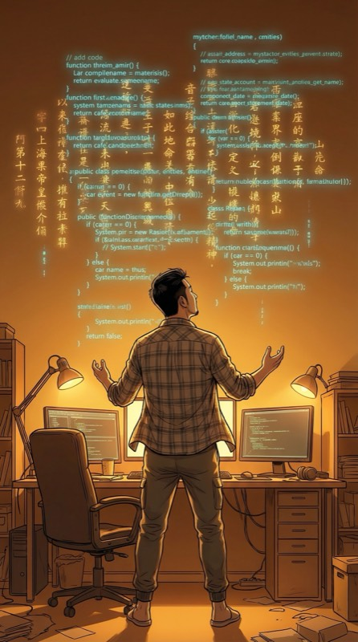
我从椅子上站起来，往后退了一步。然后我看到了——空气中漂浮着金色的代码。不是显示器的投影，是真的悬浮在空中。像全息投影，但比任何全息技术都真实。这些代码……是现实本身的源代码。
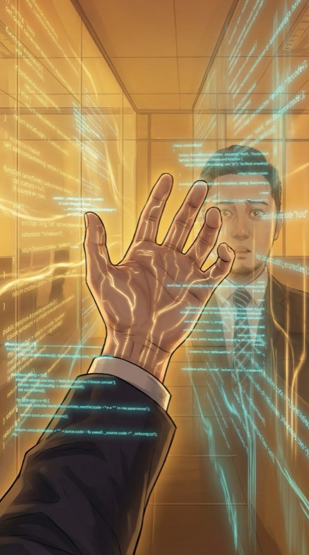
低头看自己的手。金色的代码沿着血管和肌腱的纹路流动，透过皮肤隐约可见，像电路板一样。手的后面，办公室的墙壁变得半透明，露出底层的数据流。我能看见……一切的底层代码。
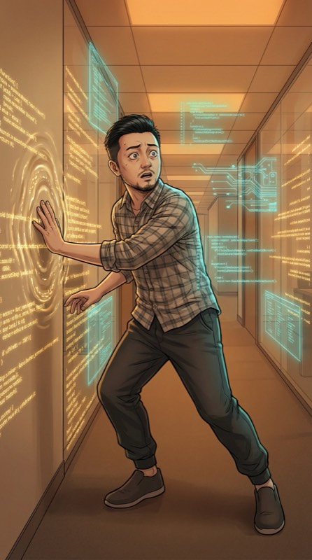
踉跄着走进走廊，一只手扶着墙。手碰到的地方，墙壁上的金色代码像水波一样荡开。走廊也是半透明的，到处是流动的数据。我的世界在三分钟前彻底变了。
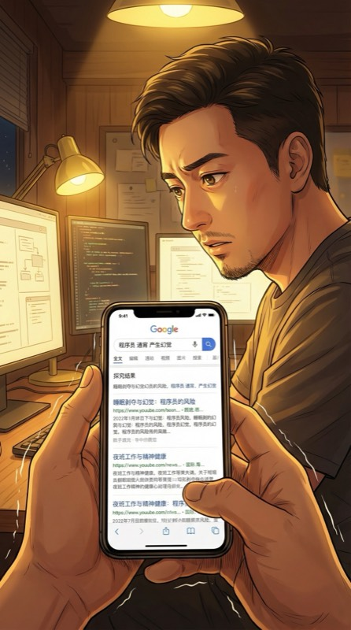
掏出手机，搜索「程序员 通宵 产生幻觉」。搜索结果全是医学科普文章。手在微微发抖。要不……先排除一下是不是脑子出了问题？
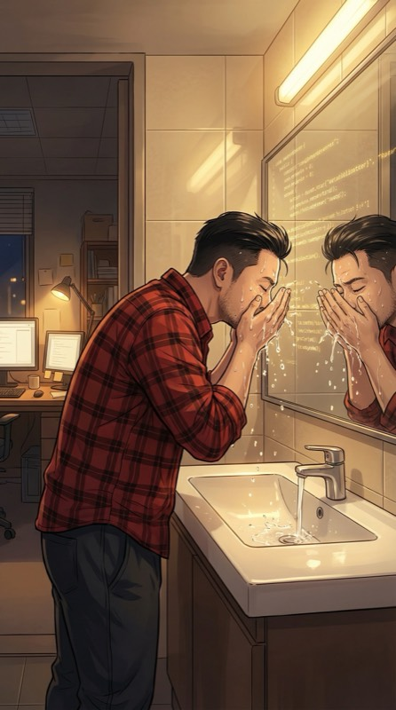
冲到洗手间，拧开水龙头往脸上泼水。水珠在暖色灯光下飞溅。镜子里映出我疲惫的脸——但镜子里的背景……瓷砖上覆盖着金色的代码流。我还没注意到。
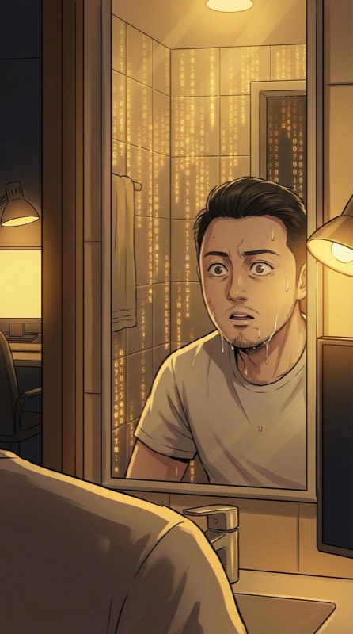
抬头看镜子。自己的脸后面，卫生间的瓷砖全被金色代码覆盖了。水从下巴滴下来。代码在镜子里美得不像话，但也吓人得要命。不是幻觉。闭眼再睁眼，还在。
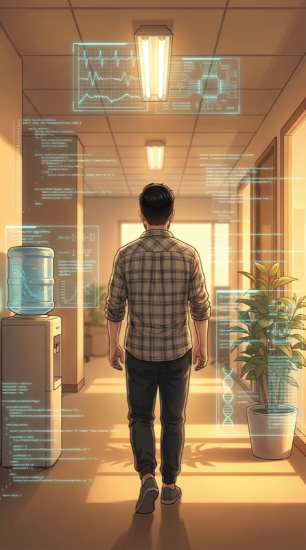
走回办公区。现在我能「看见」一切——饮水机旁边悬浮着流体力学算法，盆栽上跑着生长参数，闪烁的日光灯显示着电气波形。整个世界变成了一个巨大的IDE。我穿行其中，什么都没碰，只是看。
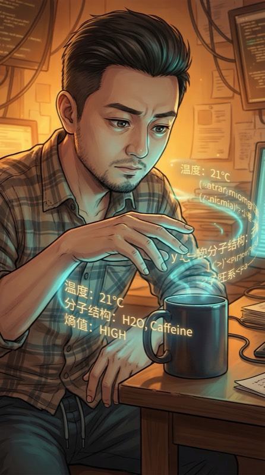
回到工位，目光落在那杯已经凉透的咖啡上。杯子周围悬浮着金色代码——温度值、分子组成、熵值……全是用编程语法和中文混合写的。手指不自觉地伸过去。要不要……试试改一下？
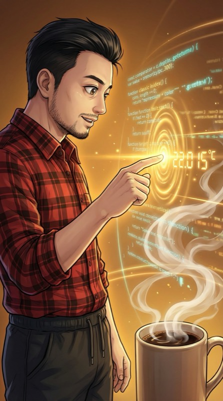
食指碰到了咖啡杯上方的金色代码。碰到的瞬间，代码亮了起来——温度值开始跳动上升。杯子里的咖啡重新冒出了热气。金色的涟漪从指尖扩散到空气中。有效。我真的改了现实的代码。
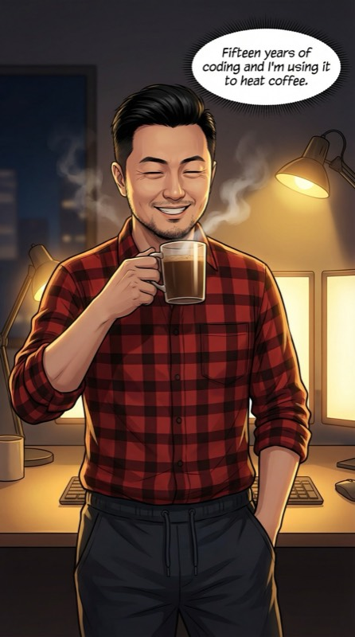
端起重新变热的咖啡，抿了一口。闭上眼睛，脸上露出这一整章里第一个真正的笑容。热咖啡的蒸汽缠绕在脸旁。十五年编程，终于用来……热咖啡。行吧。
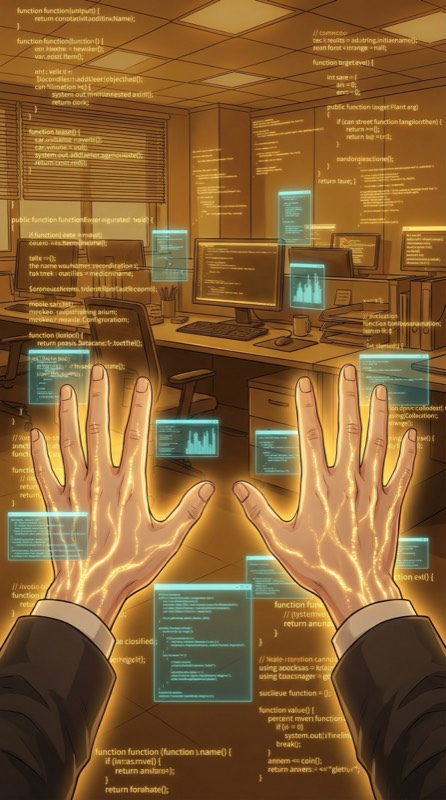
摊开双手。两只手都在发着金色的光，代码沿着血管的纹路流淌。抬头看——整个办公室都活了，每一样东西都有标注、注释、参数。世界变成了我的编辑器。可能性……无穷大。
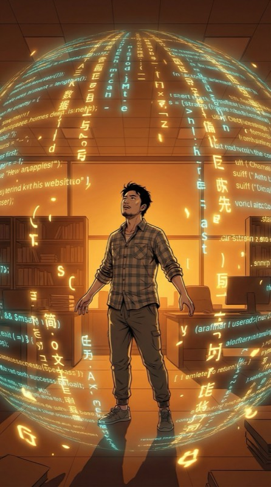
退后几步，看到全景。我站在办公室正中央，四周被一个巨大的球形金色代码穹顶包围。代码在缓慢旋转。我很小，但我在正中心。一个程序员，站在了现实的源代码里。
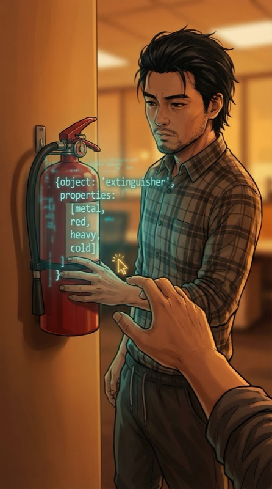
目光扫到墙上的灭火器。它的代码很简单——基础物体，属性不多。我的手伸了过去，指尖出现了一个光标，就像文本编辑器里的闪烁光标。来，先从简单的开始测试。
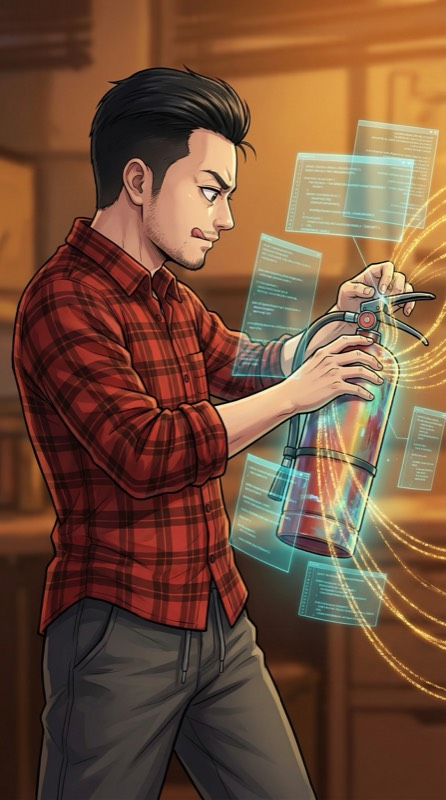
双手操作灭火器的代码，像拉扯金色的丝线一样重新排列参数。表情是那种程序员debug时的专注——舌头微微伸出来。灭火器的颜色在我手下开始变化。工程师式实验：小范围可控测试。
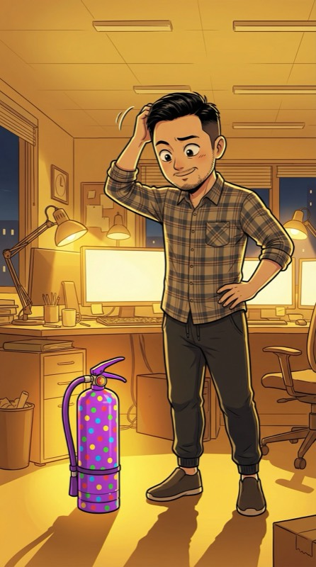
灭火器变成了……亮紫色加波点。不是预期效果。我一手叉腰，一手挠头，对着这个离谱的紫色波点灭火器哭笑不得。好吧，参数调错了。跟写代码一样，第一次编译总是有bug的。
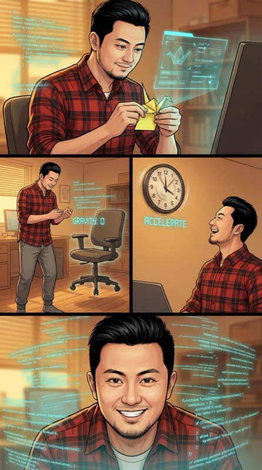
接下来的十分钟像过了十秒。便签纸被我改成了折纸鹤自动折好的；转椅被我把重力值改成零，悬浮在离地三寸的位置晃悠；墙上的钟被我加速了，秒针飞转。每一次实验成功，信心就涨一分。
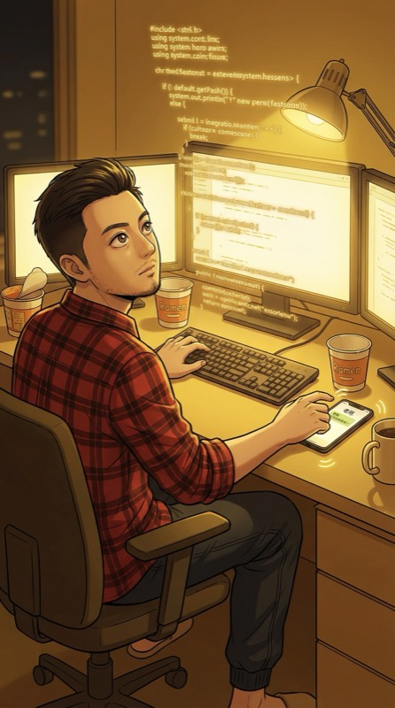
坐回工位，但现在不再看显示器了——我在看键盘上方悬浮的金色代码。手机在桌上震了一下。屏幕亮起来，是「老陈」发来的消息。要不要告诉别人？
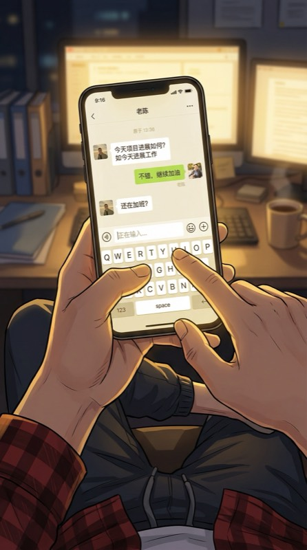
手机界面。老陈的微信消息：「还在加班？」键盘已经弹出来了，我的拇指悬在上面。打了几个字又删掉，反复几次。聊天记录里全是日常工作扯淡。告诉他？不告诉他？
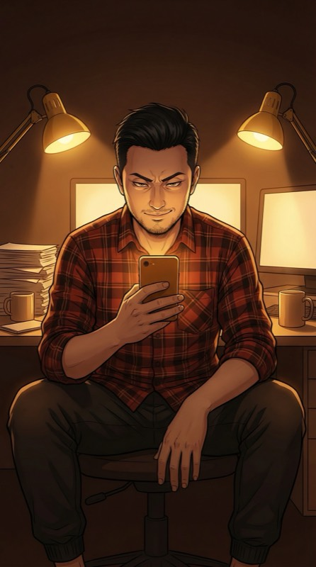
手机的光照亮半张脸。眼睛微微眯起来，嘴角带着一丝算计的弧度。决定了——不全说，但可以旁敲侧击。菩萨心肠，霹雳手段。先摸清楚状况再说。
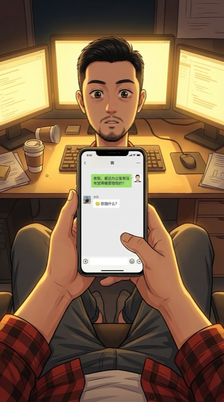
手机屏幕上，我发出了一条精心措辞的消息，随意地问老陈最近办公室有没有什么「奇怪的事」。老陈秒回一个问号和「你啥意思」。正常反应。看来只有我能看见代码。这条路，只能自己走。
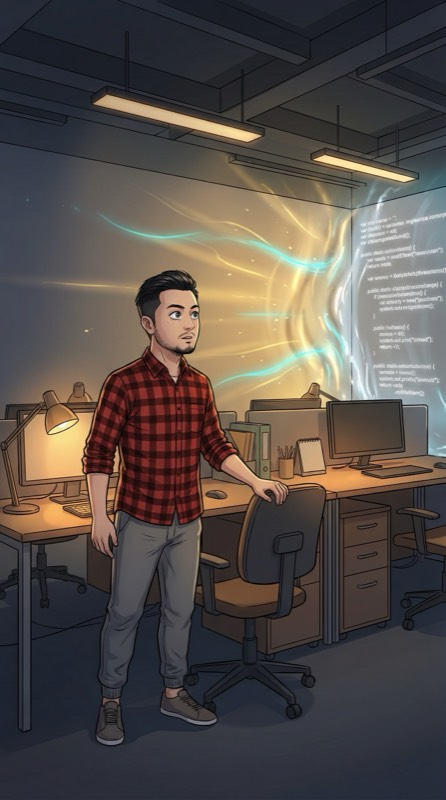
办公室突然变冷了。暖色的灯光开始闪烁。远处开放式办公区的角落，一面墙像水面一样泛起涟漪。那个区域的金色代码变了——变成白色，而且组织得很整齐。有什么东西正在穿越过来。
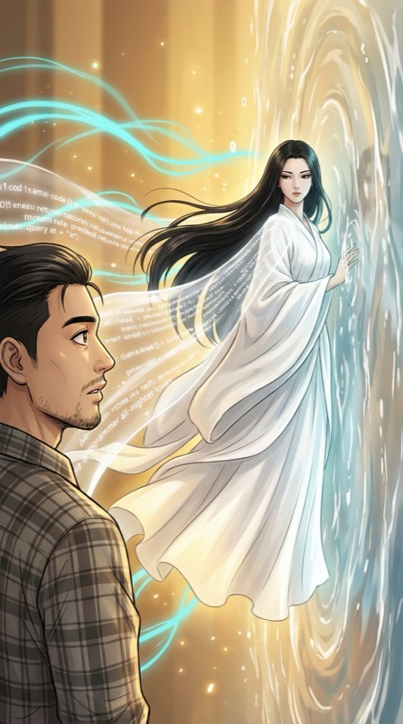
她从墙壁里走出来，像穿过一道水帘。长发飘动，白衣纤尘不染，面容精致而冷漠。白色的代码流像斗篷一样跟随她。她的目光直直地看向我的方向。
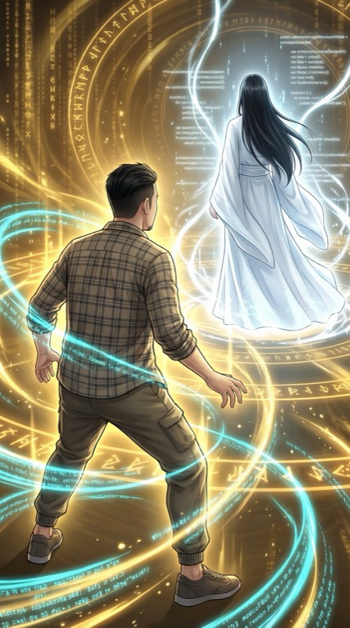
我下意识后退半步，重心移到后脚，双手微微抬起。她站在五米开外，静止不动。我周围是金色代码，她周围是白色代码。两套系统，面对面。像两种编程语言的对峙。
从我的肩膀后面看过去——她的脸近在眼前。嘴唇微张，在说话。表情冰冷但专注，像科学家在观察一个标本。她周围的白色代码缓缓脉动。长发在不存在的风中轻轻飘动。
侧脸特写。面对这种超自然场面，我的表情不是恐惧——是好奇。一根眉毛微微挑起，嘴角有要笑没笑的弧度。瞳孔里倒映着金色代码。黑客本能大于恐惧本能。这个系统……我想理解它。
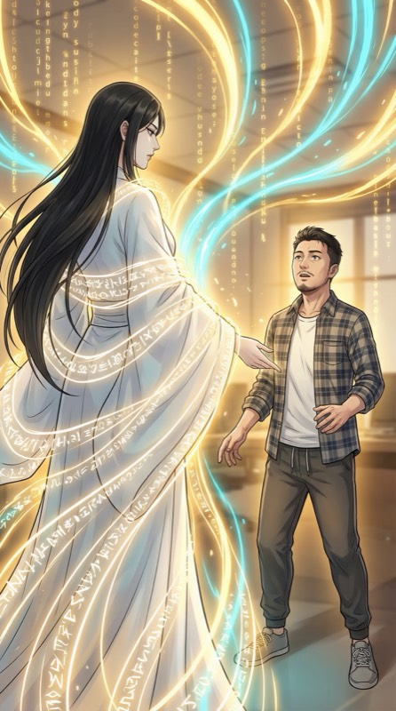
切换到「代码视角」看她——她身上包裹的代码复杂得令人窒息。精致、优雅、组织严密。对比办公室里那些金色代码，她身上的白色代码就像……把汇编语言和诗歌做比较。她是更高层级的存在。她伸出手，示意我跟她走。
我没跟。双臂抱在胸前，下巴微微扬起——谈判姿态。她微微歪头，似乎对我的胆量感到意外。金色和白色的代码在我们之间旋转交织。她有知识，我有胆。不对等，但我不怂。
伸出三根手指。意思很明确：先回答三个问题。手很稳，一点没颤。金色代码沿着手指流淌。她的身影在手后面虚化。这一刻，我在跟一个能穿墙的超自然存在……讲条件。
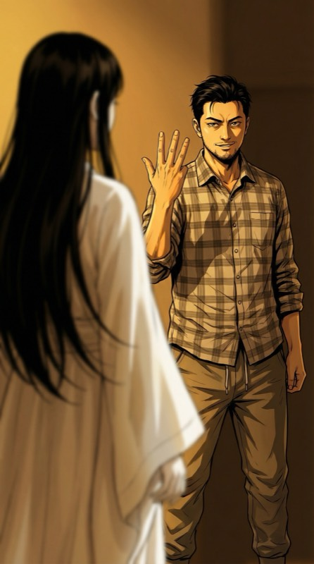
从她的角度看过来——我站在那里，三根手指竖着，带着一种笃定的半笑。格子衬衫皱巴巴的，运动裤松松垮垮的。对面站着白衣飘飘的神秘存在。但提条件的那个人，是我。
她的脸部特写。冰冷面具第一次出现裂缝——嘴角极其微小地上翘了一下。几乎看不出来，但确实在笑。白色代码的脉动变亮了。
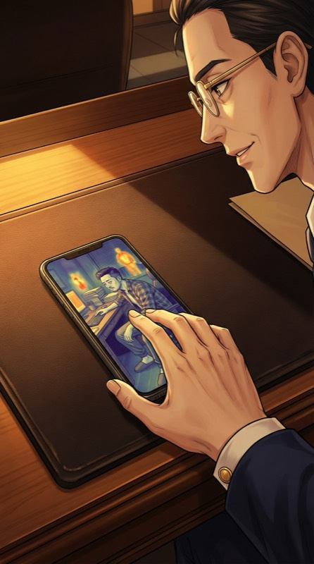
画面突然切换。另一个地方。一张奢华皮质书桌上，一部手机亮着。屏幕显示的是某种监控画面——热成像视角下的办公室，两个人形热源。一只保养精致的手伸向手机。袖口露出金色袖扣。有人在远程监视。
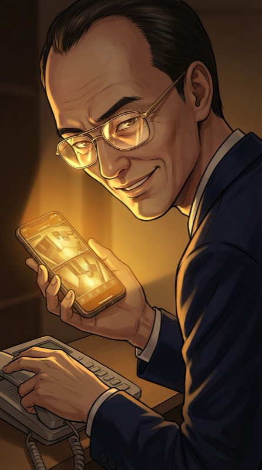
马东的脸在手机光下浮现。金丝眼镜片上倒映着监控画面。他的表情是温和的、慈祥的——完全不像坏人。但眼镜后面的眼睛在做计算。另一只手拿起了座机话筒。笑容越来越深。
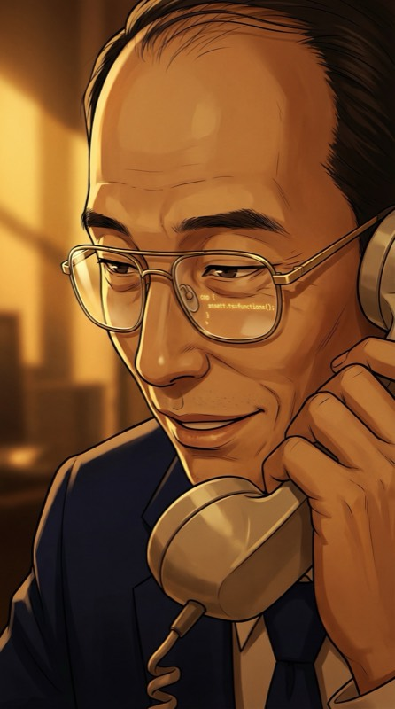
马东嘴部特写。对着话筒说话，嘴唇翕动。温和的笑容没变。但金丝眼镜片上映出一行金色代码——他也能看见代码。他也是「码修」。我不是唯一的觉醒者。这个信息，让一切变了。
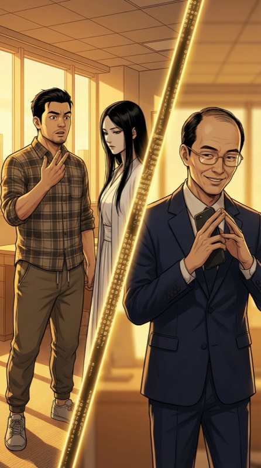
最终画面。画面被一道对角线的代码流分成两半。左边：办公室的暖光中，我竖着三根手指跟白衣女子对峙。右边：马东放下话筒，十指交叉，笑得像佛。两个世界即将碰撞。
马东放下话筒，温和地笑了。
他拨出了第二个电话。
“启动回收协议。”
第一章 · 完
代码仙途 · 未完待续
TRINITY V3 · EXP-876